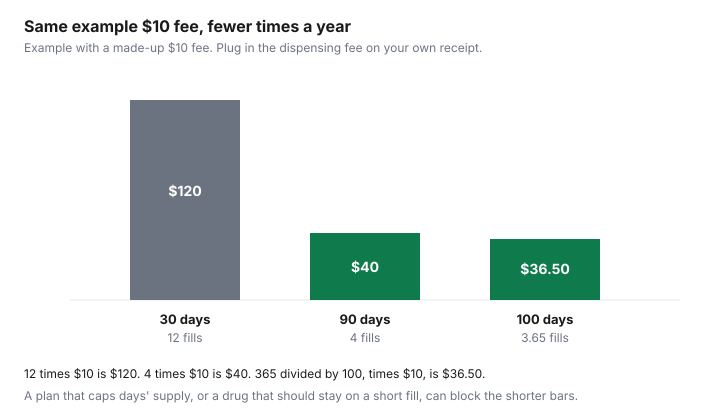

Healthcare · Canada
90- and 100-Day Prescription Fills in Canada: Cutting Dispensing Fees on Stable Medications
In Canada, moving a stable medication from 30-day to 90- or 100-day fills cuts the number of dispensing fees you pay each year from about twelve to about four or fewer. Most Ontario Drug Benefit recipients can get up to a 100-day supply, but a workplace plan can set its own days’-supply cap, so ask before you change the quantity. A dispensing fee is charged when a pharmacy fills a prescription, not when you swallow a tablet. On a stable dose, a 30-day fill can mean about twelve fees a year. A 90-day fill means about four. A 100-day fill means fewer still. The dispensing-fee guide is why the fee is on the receipt and why a warehouse pharmacy is not automatically the cheap one. This page is the quantity rule: what a plan will allow, what Ontario's public program tells pharmacies to do for chronic drugs, and how to get the prescription written so a longer fill is possible. It is not medical advice. A shorter fill is the right fill when the dose is new or the drug should not sit in a large bottle.
Key takeaways
- At an illustrative $10 fee, twelve 30-day fills cost $120 in fees. Four 90-day fills cost $40. A 100-day rhythm is about 3.65 fills a year, or $36.50 at that same $10. Replace $10 with your receipt.
- For most Ontario Drug Benefit recipients, the maximum paid quantity is a 100-day supply, stated as in effect since 1 August 2018. The Trial Prescription Program stays at 30 days.
- Listed chronic-use drugs are limited to five dispensing fees in 365 days. The ministry encourages a 100-day supply so each of those fills still earns a fee.
- A workplace plan can cap days' supply, first fills, and early refills on its own terms. No national private-plan number is listed here. Ask before you change the quantity.
- Ontario seniors pay up to $6.11 per fill after the deductible, unless they are on the lower co-pay. Fewer fills cut that co-pay as well as the fee.
Why longer fills cut the number of dispensing fees you pay
Write the fee from your own receipt into the worksheet. This article uses $10 only so the multiplication is visible.
It is not a surveyed Canadian fee, and it is not a Costco fee. The drug cost and any markup stay in the price either way. What changes is how often the fee is added.
Twelve fills at 30 days cover 360 days. Twelve times $10 is $120. Four fills at 90 days cover the same 360 days. Four times $10 is $40. The difference is $80 of fees, illustrative. A 100-day supply does not divide the year into a whole number. 365 divided by 100 is 3.65 fills. At $10, that is $36.50. Three fills cover 300 days and leave a gap, so do not budget a year as three fees unless the plan will not pay the partial fourth. The chart draws $120, $40, and $36.50.
A longer fill is not a saving if you stop the drug and cannot use the rest, or if the plan refuses the quantity and the pharmacy bills you the unpaid fee. It is also not a saving if the only reason the monthly fill felt expensive was the deductible, and you were going to meet that deductible anyway. Split the receipt into drug cost, markup, and fee before you celebrate a 90-day bottle. The generic guide is the drug-cost half.
Plan rules: maximum days' supply, first-fill limits and early-refill windows
Public plans and workplace plans both limit how many days they will pay for at once. The Ontario rule below is set out in full in the Ontario source.
A workplace booklet may say 30 days, 90 days, or 100 days, and it may say the first fill of a new drug is shorter. The workplace drug guide is where prior authorization and fee caps are unpacked. Copy the day-supply line from your booklet into the checklist. Do not borrow Ontario's 100 days for a private plan that never agreed to it.
Early refills are a second limit. Ontario's get-coverage page, in the section on travelling inside the province, says a pharmacist can transfer a prescription to another Ontario pharmacy if refills remain, you are not refilling too soon, and the drug is not a controlled drug, a controlled-drug preparation, or a narcotic. "Too soon" on that page means within 10 days of the end of the supply. That sentence is about a transfer for travel inside Ontario. It is not a national early-refill law, and it is not a promise that every private plan uses 10 days. Ask your plan what it treats as too soon. Filling early because a vacation starts can be allowed once you show the travel documents the public plan asks for, and refused if you are simply stocking a drawer.
For travel outside Ontario, the same page says you can get a larger supply once in the Drug Benefit year, 1 August to 31 July. If you have less than 30 days on hand, the travel supply can be up to 200 days. If you have 30 days or more, it is a 100-day supply. You need a letter that you will be gone more than 100 days, or a travel-insurance document showing 100 to 200 days away. Prescriptions filled outside Ontario are not covered. You still pay the deductible or co-payment on the extra supply. One vacation fill is not a new permanent 200-day rule.
Ontario Drug Benefit guidance on 100-day supplies for chronic medications
The page on dispensing-fee conditions, updated 20 January 2026, says Ontario Regulation 201/96 sets when a fee is paid. For most recipients, as of 1 August 2018, the maximum quantity the program pays for is a supply for a 100-day course of treatment. Medications in the Trial Prescription Program are limited to 30 days. A pharmacy may still dispense less and be paid a fee in listed cases, including a safety, abuse, or diversion concern, or a person who cannot manage the medicine because of a physical, cognitive, or sensory impairment and who agrees to the smaller amount.
There is also a cap on how many fees the program pays. In most cases the Executive Officer pays at most two dispensing fees per 28 days for a listed drug, even if the prescription says to dispense more often. For chronic-use medications on the ministry's list, the cap is five dispensing fees per 365-day period, starting the day of the first claim. The page says pharmacies are encouraged to give most recipients a 100-day supply of most chronic-use medications so that a fee is still paid at each of those fills. Five fees a year is more than a steady 100-day schedule needs. The five-fee cap is what bites when the bottle is small. Exemptions exist, including some residential settings, compounds, and situations where more frequent dispensing is needed for safety. The pharmacy, not this article, applies those exemptions.
The public get-coverage page says you can ask for a three-month supply of some drugs used for chronic conditions such as diabetes, high cholesterol, and high blood pressure, so you pay co-payment fees less often. A three-month supply is about 90 days. The professional page's maximum is 100 days. They are the same policy family and not the same sentence. Ask the pharmacist which quantity the claim will accept for that DIN. Ontario seniors who are not on the Seniors Co-Payment Program pay the first $100 of prescription costs in the benefit year and then up to $6.11 per fill. Twelve fills at $6.11 are $73.32. Four fills are $24.44. The difference, $48.88, is arithmetic on the published co-pay, separate from the dispensing fee the plan pays the pharmacy. The seniors' co-payment guide is who pays $6.11 and who pays up to $2. People on OHIP+ with no private plan pay no charge for a covered drug, so a longer fill does not multiply a co-pay they are not paying.
When a shorter fill is safer or required (new drugs, dose changes, controlled drugs)
A 100-day bottle of a drug you have taken for years is the case the chronic-medication rule describes. A drug you started last week is the Trial Prescription Program case when that program applies: 30 days.
A dose that changed this month is a reason to finish the current supply before you ask for a larger one. The regulation page allows a shorter fill when the pharmacist's opinion is that safety, abuse, or diversion is a concern, or that you cannot manage a large quantity. Agreeing to a shorter fill in that second case is part of the rule. Do not treat a pharmacist's refusal of a 100-day supply as a lost coupon.
Controlled drugs, controlled-drug preparations, and narcotics are called out on the travel-transfer section: they are not transferred to another Ontario pharmacy under that convenience rule. This page does not invent a day-supply maximum for them beyond what the pages say. Ask the prescriber and the pharmacist what quantity is appropriate and what the plan will pay. A longer fill that sits in a cupboard is a safety problem and, if you never take it, a wasted fee.
Getting your prescription written to allow longer fills
The prescriber writes the quantity and the number of refills. A signature that says "30 days, 12 refills" can be filled monthly even when you are stable.
Ask for a quantity the plan allows, such as 90 or 100 days, and enough refills to cover the year, if the prescriber agrees the dose is stable. Bring the plan's day-supply rule on paper. For an Ontario Drug Benefit chronic drug, mention the 100-day supply the ministry encourages. The pharmacist can still dispense less when the regulation says so.
If you use more than one pharmacy, the early-refill and transfer rules get harder, not easier. Pick the pharmacy that will hold the longer fill and ask the prescriber to send refills there. A delivery pharmacy and a storefront pharmacy billing the same public plan can trip the five-fee cap or the two-fees-in-28-days rule between them. One pharmacy of record is the clean version of this saving.
Annual savings worksheet
Enter your fee. Do not enter the illustrative $10 unless your receipt says $10.
Count fills you will actually make. A drug you take for six months is not a twelve-fill comparison. If the plan pays the fee and you pay only a co-pay, the saving you feel is the co-pay column. If you pay cash, the saving you feel is the fee column plus any markup that does not change with days' supply.
| Fill length | Fills in about a year | Fees at an illustrative $10 | Your fee, from the receipt | ODB senior co-pays at $6.11 |
|---|---|---|---|---|
| 30 days | 12 fills cover 360 days | $120 | 12 times your fee | 12 times $6.11 is $73.32 |
| 90 days | 4 fills cover 360 days | $40 | 4 times your fee | 4 times $6.11 is $24.44 |
| 100 days | 365 divided by 100 is 3.65 fills | $36.50 | 3.65 times your fee | 3.65 times $6.11 is $22.30 |
| Rule | Ontario Drug Benefit | Your workplace plan |
|---|---|---|
| Maximum days paid | 100 days for most recipients since 1 August 2018. Public page also describes a 3-month supply of some chronic drugs. | Write the booklet figure. Not copied from Ontario. |
| First fill or trial | 30 days when the Trial Prescription Program applies. | Ask. Often shorter than a maintenance fill. |
| How many fees the plan will pay | Often two per 28 days. Five per 365 days for listed chronic drugs. | Ask whether a fee cap exists. |
| Early refill | Travel transfer inside Ontario: not within 10 days of the end of the supply. Not for controlled drugs or narcotics. | Ask for the window. Do not assume 10 days. |
| Who can refuse a long fill | The dispenser, for safety, abuse, diversion, or inability to manage the quantity. | The pharmacist and the plan. |

Sources
- Ontario.ca, Conditions for payment of a dispensing fee under the Ontario Drug Benefit Program, updated 20 January 2026: 100-day maximum for most recipients as of 1 August 2018, 30-day trial supplies, two fees per 28 days, five fees per 365 days for listed chronic drugs. Checked 27 Sep 2026.
- Ontario.ca, Get coverage for prescription drugs, updated 18 August 2026: three-month supplies for some chronic drugs, senior deductible $100 and co-payment up to $6.11, travel-supply rules, and the 10-day transfer limit. Checked 27 Sep 2026.
- B.C. Fair PharmaCare plan page, updated 27 August 2026: eligible costs include dispensing fees of up to $11. Used only as a deductible note.
- Illustrative $10 fee is arithmetic, not a pharmacy quote. A retailer fee survey was not used. The dispensing-fee guide explains how to read a live quote.
Frequently asked questions
Is a 90-day supply always cheaper?
It cuts the number of dispensing fees if the plan allows the longer fill and you would have paid a fee each month. At an illustrative $10 fee, 12 monthly fills are $120 and four 90-day fills are $40. Your receipt may not say $10. A plan that will not pay beyond 30 days, a drug that should stay on a short supply, or a deductible you still have to meet can erase the gap. The drug cost itself is not smaller just because the fill is longer.
Will my plan pay for a 100-day supply?
The Ontario Drug Benefit page, updated 20 January 2026, says that for most recipients the maximum quantity the program pays for is a 100-day supply, a rule it dates to 1 August 2018. A workplace plan can set a different maximum. Ask the insurer what it will pay before you ask the prescriber for a 100-day quantity. This page does not print a national private-plan cap, because no source cited here lists one.
Can I get a longer fill for a new medication?
Often no. The same Ontario page says medications in the Trial Prescription Program are limited to a quantity sufficient for 30 days. A dose that is still changing, or a drug the pharmacist judges unsafe in a large quantity, is a reason for a shorter fill. The page allows a shorter supply when safety, abuse, or diversion is a concern, or when the person cannot manage the medicine and agrees to less. That is a professional decision, not a discount rule.
How do I ask my prescriber for a longer supply?
Ask for a quantity and refills that match what the plan will pay, and say you are stable on the dose. For Ontario Drug Benefit chronic drugs, the ministry encourages a 100-day supply so the pharmacy can bill a fee at each fill inside the five-fee yearly cap. Bring the plan's day-supply rule to the appointment. Do not ask for a stockpile of a controlled drug. The get-coverage page says a transfer for travel will not move a controlled drug, a controlled-drug preparation, or a narcotic.
Do longer fills affect my deductible?
You meet a deductible when eligible costs are accepted, not when a calendar page turns. A longer fill can post a larger eligible amount on one day, which can cross a deductible sooner, and it can mean fewer co-pays later. In B.C., Fair PharmaCare counts dispensing fees of up to $11 toward the deductible. An Ontario Drug Benefit senior co-payment of up to $6.11 is charged per fill after the deductible, so fewer fills mean fewer of those co-pays. Confirm which deductible you are in before you change the quantity.
Researched and drafted with AI assistance and fact-checked against official Canadian sources. How we create content.